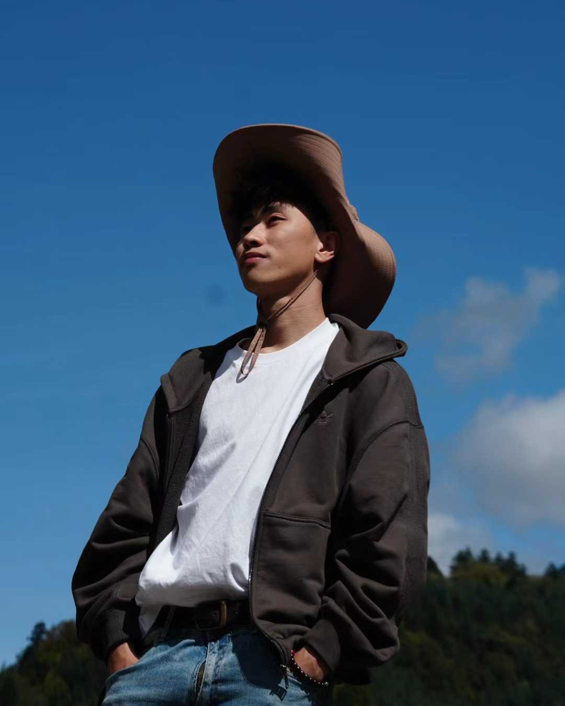
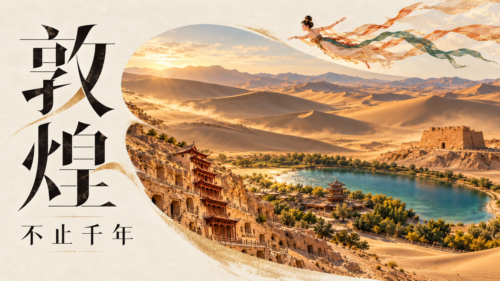

01 / 08HISTORICAL NARRATIVE历史叙事
三次转手
TER TRADITUM
 进入项目 ↗
进入项目 ↗
古罗马的金色余晖，跨越时空的人物群像。
01 — 历史与时间AI 影像作品集AI FILM
向下浏览作品MEET THE CREATOR
关于我 01
HI
THERE
镜头之外的我

你好 我是
YUMYULUCK
AI 影像创作者
A PRIVATE FILM FESTIVAL
不同的世界，同一种热爱。
欢迎来到我的私人电影节。

以飞天为引，让千年的往来与今日的抵达相逢。
TER TRADITUM
进入项目 ↗
古罗马的金色余晖，跨越时空的人物群像。
01 — 历史与时间BEYOND A THOUSAND YEARS
大漠、石窟与飞天，展开一幅流动的东方画卷。
02 — 文化与山河DRAGON GUARDIAN
 进入项目 ↗
进入项目 ↗
森林深处的暖光，少年与龙相依的瞬间。
03 — 冒险与羁绊HADES & THE GOLDEN WISH
紫色焰火与金色微光，交织成华丽的幻想。
04 — 神话与心愿LOVE & SAKURA
红发、制服与飞舞的樱花，定格鲜明的青春表情。
05 — 青春与心动AI LIVE ACTION
AI 真人剧作品。
AI 真人剧3D ANIMATION
 进入项目 ↗
进入项目 ↗3D 动画短片。
3D 短片COMMERCIAL
 进入项目 ↗
进入项目 ↗VEO 宠物 AI 摄像头广告作品。
TVC 广告